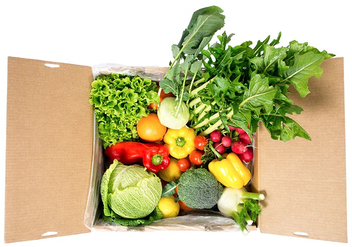

Con Frox puoi creare il tuo box di frutta, verdura, carne, formaggi e altri prodotti freschi direttamente dal produttore come piace a te. È semplice: scegli, ordina e ritira oppure fattelo consegnare da noi! Provalo subito:

Scegli il tuo box preferito e personalizzalo aggiungendo i prodotti uno per uno. Nell’assortimento dei box di ortofrutta troverai frutta e verdura di stagione e super fresca, raccolta direttamente dal contadino per te. Il Fresh-Box contiene prodotti freschi e genuini da contadini e produttori locali e nazionali.
A partire da
A partire da
Scarica l'app per scoprire i nostri "Special Box"...
*Ci possono essere delle eccezioni, che vengono indicate
Ordina la tua fornitura settimanale di frutta, verdura, carne e altri prodotti freschi in meno di 1 minuto:
Scegli la categoria del box più adatta alle tue esigenze. Le diverse categorie vengono mostrate all'interno dell'app oppure qui sopra.
Riempi il tuo Frox-Box con i tuoi prodotti preferiti, come desideri tu. Scegli un minimo di 4 articoli diversi.
Inserisci i tuoi dati e seleziona il punto di ritiro più comodo per te, oppure scegli la consegna a casa. Puoi pagare con carta di credito, debito o prepagata. I pagamenti vengono gestiti da Stripe, fornitore per l'elaborazione dei pagamenti online di primo livello. Non serve alcuna registrazione.
Il concetto Frox si focalizza su freschezza, qualità, sostenibilità e fairness. Il cliente e il produttore sono i protagonisti.
L' assortimento ortofrutticolo Frox varia ogni settimana ed è composto da prodotti freschi e di stagione, direttamente dal campo, il che li rende più nutrienti e gustosi - coltivati con cura dai nostri produttori selezionati.
Viene raccolta solo la frutta e la verdura ordinata, settimana per settimana, in modo da evitare inutili sprechi alimentari. Ci approvvigioniamo solo degli articoli freschi che vengono ordinati.
Nei box di ortofrutta Frox non viene utilizzata plastica, cerchiamo di utilizzare solo cartone o materiali biodegradabili, il cartone stesso viene utilizzato più volte.
Ci approvvigioniamo dei prodotti direttamente dal produttore, eliminando passaggi e costi inutili. In questo modo possiamo garantirgli un prezzo equo e incentivarlo a consegnare prodotti di qualità.
I nostri box hanno un prezzo che si adatta in base ai prodotti scelti. Ogni prodotto ha un prezzo a pezzo visibile nell’app. Ti basterà aggiungere i prodotti desiderati al resto pensiamo noi.
Ordiniamo con breve anticipo e possiamo quindi offrire prodotti più freschi, più maturi e più gustosi.

I nostri articoli vengono raccolti e prodotti per te direttamente nella produzione. Arrivano al nostro centro di confezionamento per poi essere spediti ai punti di ritiro o direttamente a casa tua.
I nostri prodotti vengono confezionati con dei guanti e il box chiuso con il nostro sigillo di qualità. Di conseguenza non vengono toccati più volte e nessun altro viene più a contatto con la merce. I nostri prodotti freschi sono confezionati sottovuoto ed eventualmente pronti per essere congelati.
Qui troverete le domande più frequenti, se avete altre domande specifiche o suggerimenti, non esitate a contattarci qui.
Ciascuna delle categorie di box sopra indicate ha un prezzo minimo diverso. I prodotti hanno un prezzo per pezzo, che è visibile nell'app. Una volta raggiunto il prezzo minimo, il box può essere ordinato.
Non c'è bisogno di nessuna registrazione, né di sottoscrivere un abbonamento, puoi ordinare quando e come preferisci.
Gli ordini possono essere effettuati settimanalmente dalle ore 10 di sabato alle ore 13 di martedì solo all’ interno dell’app Frox. Riceverai una notifica ogni volta che sarà possibile effettuare un nuovo ordine – ti consigliamo di mantenere attive le notifiche di Frox.
Al momento non è possibile mischiare frutta e verdura e altri prodotti freschi in un unico box. Naturalmente, è possibile ordinare un box di frutta e verdura e un Fresh-Box, i costi non variano e i box vengono consegnati insieme.
Il peso minimo è indicato nella descrizione di ogni prodotto nell'applicazione. Se il peso del prodotto ricevuto non dovesse corrispondere, contattaci e troveremo una soluzione insieme.
È possibile scegliere tra il ritiro al punto di ritiro e la consegna a casa. Gli orari e il giorno per il ritiro sono indicati qui, oppure all’interno dell’app. Se opti per la consegna a casa, potrai scegliere il giorno e la fascia oraria della consegna. Per il Fresh Box è disponibile solo la consegna a casa.
Il Fresh-Box può essere ordinato solo con consegna a domicilio per preservare la catena del freddo. Se ordini sia un box di ortofrutta che un Fresh-Box, entrambi saranno consegnati a casa tua insieme, ma non dimenticare di selezionare la consegna a domicilio per entrambi gli ordini.
Una volta chiuse le ordinazioni il martedì, ogni frutto scelto viene raccolto apposta per te. Perciò sono necessari un giorno per la raccolta, un giorno per il confezionamento e un giorno per la distribuzione.
Si, il cartone può essere restituito al punto di ritiro / al corriere, l’importante è che sia ben disteso e privo di etichette.
Il peso minimo garantito del box, si adatta ai prodotti selezionati ed è sempre visibile nell'app. Cerchiamo di mantenere i pesi dei prodotti il più costanti possibile, ma trattandosi di prodotti naturali, possono verificarsi delle differenze.
Qui troverete novità e articoli interessanti sulla produzione e sul prodotto.